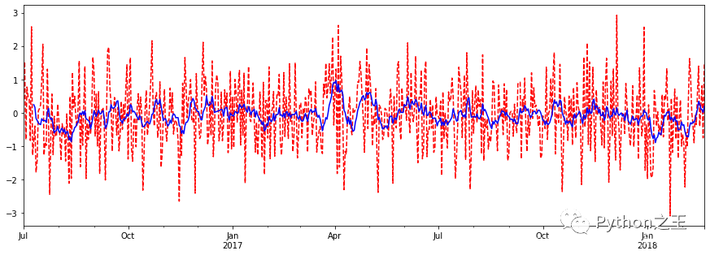
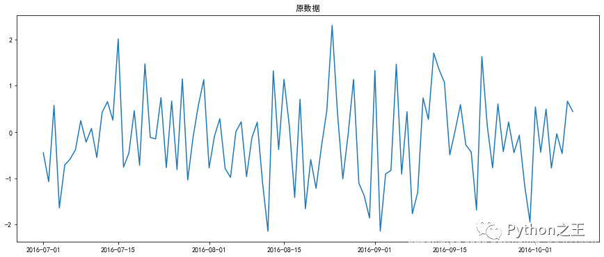
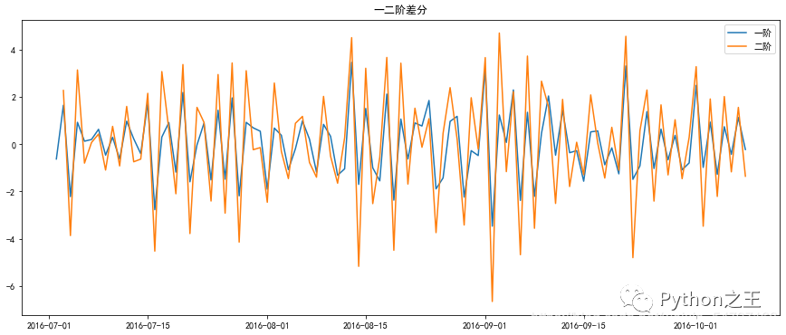
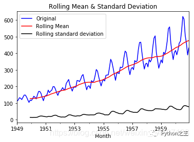
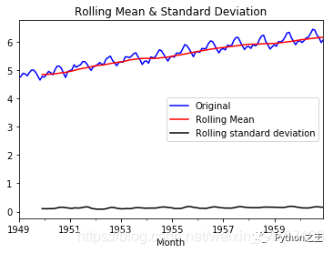
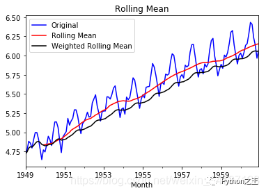
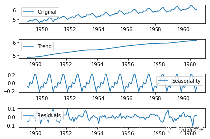
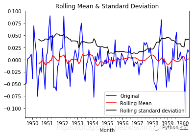
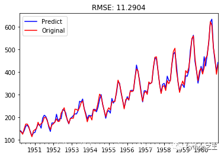

时间序列分析和预测（含实例及代码）
时间序列
在生产和科学研究中，对某一个或者一组变量 进行观察测量，将在一系列时刻所得到的离散数字组成的序列集合，称之为时间序列。
-
pandas生成时间序列
-
过滤数据
-
重采样
-
插值
-
滑窗
-
数据平稳性与差分法
pandas生成时间序列
-
时间戳（timestamp）
-
固定周期（period）
-
时间间隔（interval）
| import pandas as pd
import numpy as np
# TIMES的几种书写方式 #2016 Jul 1; 7/1/2016; 1/7/2016 ;2016-07-01; 2016/07/01
rng = pd.date_range('2016-07-01', periods = 10, freq = '3D')#不传freq则默认是D
rng
"""
DatetimeIndex(['2016-07-01', '2016-07-04', '2016-07-07', '2016-07-10',
'2016-07-13', '2016-07-16', '2016-07-19', '2016-07-22',
'2016-07-25', '2016-07-28'],
dtype='datetime64[ns]', freq='3D')
"""
time=pd.Series(np.random.randn(20),index=pd.date_range('2016-01-01',periods=20))
print(time)
""" 输出
2016-01-01 -1.503070
2016-01-02 1.637771
2016-01-03 -1.527274
2016-01-04 1.202349
2016-01-05 -1.214471
2016-01-06 2.686539
2016-01-07 -0.665813
2016-01-08 1.210834
2016-01-09 0.973659
2016-01-10 -1.003532
2016-01-11 -0.138483
2016-01-12 0.718561
2016-01-13 1.380494
2016-01-14 0.368590
2016-01-15 -0.235975
2016-01-16 -0.847375
2016-01-17 -1.777034
2016-01-18 1.976097
2016-01-19 -0.631212
2016-01-20 -0.613633
Freq: D, dtype: float64
"""
|
truncate过滤
| time.truncate(before='2016-1-10')#1月10之前的都被过滤掉了
time.truncate(after='2016-1-10')#1月10之前的都被过滤掉了
""" 输出
2016-01-01 -1.503070
2016-01-02 1.637771
2016-01-03 -1.527274
2016-01-04 1.202349
2016-01-05 -1.214471
2016-01-06 2.686539
2016-01-07 -0.665813
2016-01-08 1.210834
2016-01-09 0.973659
2016-01-10 -1.003532
Freq: D, dtype: float64
"""
|
数据重采样
-
时间数据由一个频率转换到另一个频率
-
降采样
-
升采样
| import pandas as pd
import numpy as np
rng = pd.date_range('1/1/2011', periods=90, freq='D')#数据按天
ts = pd.Series(np.random.randn(len(rng)), index=rng)
ts.resample('M').sum()#数据降采样，降为月，指标是求和，也可以平均，自己指定
ts.resample('3D').sum()#数据降采样，降为3天
day3Ts = ts.resample('3D').mean()
day3Ts
print(day3Ts.resample('D').asfreq())#升采样，要进行插值
|
插值方法：
-
ffill 空值取前面的值
-
bfill 空值取后面的值
-
interpolate 线性取值
| day3Ts.resample('D').ffill(1)
"""
2011-01-01 0.196793
2011-01-02 0.196793
2011-01-03 NaN
2011-01-04 -0.145891
2011-01-05 -0.145891
...
2011-03-25 NaN
2011-03-26 -0.993341
2011-03-27 -0.993341
2011-03-28 NaN
2011-03-29 -0.022786
Freq: D, Length: 88, dtype: float64
"""
day3Ts.resample('D').bfill(1)
"""
2011-01-01 0.196793
2011-01-02 NaN
2011-01-03 -0.145891
2011-01-04 -0.145891
2011-01-05 NaN
...
2011-03-25 -0.993341
2011-03-26 -0.993341
2011-03-27 NaN
2011-03-28 -0.022786
2011-03-29 -0.022786
Freq: D, Length: 88, dtype: float64
"""
day3Ts.resample('D').interpolate('linear')#线性拟合填充
"""
2011-01-01 0.196793
2011-01-02 0.082565
2011-01-03 -0.031663
2011-01-04 -0.145891
2011-01-05 -0.196231
...
2011-03-25 -0.771202
2011-03-26 -0.993341
2011-03-27 -0.669823
2011-03-28 -0.346305
2011-03-29 -0.022786
Freq: D, Length: 88, dtype: float64
"""
|
Pandas滑动窗口：
-
滑动窗口就是能够根据指定的单位长度来框住时间序列，从而计算框内的统计指标。
-
相当于一个长度指定的滑块在刻度尺上面滑动，每滑动一个单位即可反馈滑块内的数据。
-
滑动窗口可以使数据更加平稳，浮动范围会比较小，具有代表性，单独拿出一个数据可能或多或少会离群，有差异或者错误，使用滑动窗口会更规范一些。
| %matplotlib inline
import matplotlib.pylab
import numpy as np
import pandas as pd
df = pd.Series(np.random.randn(600), index = pd.date_range('7/1/2016', freq = 'D', periods = 600))
df.head()
"""
2016-07-01 0.391383
2016-07-02 1.529039
2016-07-03 -0.807703
2016-07-04 0.770088
2016-07-05 0.476651
Freq: D, dtype: float64
"""
r = df.rolling(window = 10)
#r.max, r.median, r.std, r.skew倾斜度, r.sum, r.var
print(r.mean())
"""
2016-07-01 NaN
2016-07-02 NaN
2016-07-03 NaN
2016-07-04 NaN
2016-07-05 NaN
...
2018-02-16 0.262464
2018-02-17 0.114787
2018-02-18 0.088134
2018-02-19 0.011999
2018-02-20 0.190583
Freq: D, Length: 600, dtype: float64
"""
import matplotlib.pyplot as plt
%matplotlib inline
plt.figure(figsize=(15, 5))
df[:].plot(style='r--')
df[:].rolling(window=10).mean().plot(style='b')
|

数据平稳性与差分法：
平稳性
-
要求经由时间序列所得到的的拟合曲线在未来一段时间内仍能顺着现有形态‘惯性’延续下去
-
即均值和方差不发生明显变化
-
ARIMA 模型对时间序列的要求是平稳型。
-
因此，当你得到一个非平稳的时间序列时，首先要做的即是做时间序列的差分，直到得到一个平稳时间序列。
-
如果你对时间序列做d次差分才能得到一个平稳序列，那么可以使用ARIMA(p,d,q)模型，其中d是差分次数
ARIMA(p,d,q)
| %matplotlib inline
import matplotlib.pylab
import numpy as np
import pandas as pd
df = pd.Series(np.random.randn(100), index = pd.date_range('7/1/2016', freq = 'D', periods = 100))
df.head()
"""
2016-07-01 -0.451037
2016-07-02 -1.075953
2016-07-03 0.573926
2016-07-04 -1.643342
2016-07-05 -0.716047
Freq: D, dtype: float64
"""
df.shift(-1) -df
"""
2016-07-01 -0.624916
2016-07-02 1.649879
2016-07-03 -2.217268
2016-07-04 0.927295
2016-07-05 0.127485
"""
df.diff(2)
"""
2016-07-01 NaN
2016-07-02 NaN
2016-07-03 1.024963
2016-07-04 -0.567389
2016-07-05 -1.289973
"""
import matplotlib.pyplot as plt
plt.rcParams['font.sans-serif'] = ['SimHei'] #中文支持
plt.rcParams['axes.unicode_minus'] = False #正常显示负号
x = df.index
y = df
plt.figure(figsize=(15,6))
plt.plot(x,y)
plt.title('原数据')
newx = df.index
y = df.diff(1)
plt.figure(figsize=(15,6))
plt.plot(x,y,label = '一阶')
plt.title('一二阶差分')
y = y.diff(1)
plt.plot(x,y,label = '二阶')
plt.legend()
|
 
自回归 AR
自回归模型限制
-
用自身来预测
-
平稳性
-
自相关性 判断自相关系数！！
-
只适用于预测与自身前期相关的现象
移动平均模型（MA）
ARIMA
自相关函数ACF
如何确定 pq参数？
实例操作
主要分为4部分
-
用pandas处理时序数据
-
检验序数据的稳定性
-
处理时序数据变成稳定数据
-
时序数据的预测
1 用pandas导入和处理时序数据
数据集是：航空乘客数量预测例子数据集international-airline-passengers.csv
下载地址
| import numpy as np
import pandas as pd
from datetime import datetime
import matplotlib.pylab as plt
import tqdm
import statsmodels
from statsmodels.graphics.tsaplots import plot_acf, plot_pacf
from statsmodels.tsa.arima_model import ARIMA
import warnings
warnings.filterwarnings('ignore')
# 读取数据，pd.read_csv默认生成DataFrame对象，需将其转换成Series对象
df = pd.read_csv('international-airline-passengers.csv', encoding='utf-8', index_col='Month')
df.index = pd.to_datetime(df.index) # 将字符串索引转换成时间索引
ts = df['Passengers'] # 生成pd.Series对象
ts = ts.astype('float')
ts.head()
"""
Month
1949-01-01 112.0
1949-02-01 118.0
1949-03-01 132.0
1949-04-01 129.0
1949-05-01 121.0
Name: Passengers, dtype: float64
"""
ts.index
"""
DatetimeIndex(['1949-01-01', '1949-02-01', '1949-03-01', '1949-04-01',
'1949-05-01', '1949-06-01', '1949-07-01', '1949-08-01',
'1949-09-01', '1949-10-01',
...
'1960-03-01', '1960-04-01', '1960-05-01', '1960-06-01',
'1960-07-01', '1960-08-01', '1960-09-01', '1960-10-01',
'1960-11-01', '1960-12-01'],
dtype='datetime64[ns]', name='Month', length=144, freq=None)
"""
ts['1949-01-01']
"""112.0"""
ts[datetime(1949,1,1)]
"""112.0"""
ts['1949-1' : '1949-6']
"""
Month
1949-01-01 112.0
1949-02-01 118.0
1949-03-01 132.0
1949-04-01 129.0
1949-05-01 121.0
1949-06-01 135.0
Name: Passengers, dtype: float64
"""
|
2 检验序数据的稳定性
因为ARIMA模型要求数据是稳定的，所以这一步至关重要。
2.1 判断数据是稳定的常基于对于时间是常量的几个统计量：
常量的均值
常量的方差
与时间独立的自协方差
2.2 python判断时序数据稳定
平稳性检验一般采用观察法和单位根检验法。
观察法：需计算每个时间段内的平均的数据均值和标准差。
单位根检验法：通过Dickey-Fuller Test 进行判断，大致意思就是在一定置信水平下，对于时序数据假设 Null hypothesis: 非稳定。这是一种常用的单位根检验方法，它的原假设为序列具有单位根，即非平稳，对于一个平稳的时序数据，就需要在给定的置信水平上显著，拒绝原假设。
| # 移动平均图
def draw_trend(timeseries, size):
f = plt.figure(facecolor='white')
# 对size个数据进行移动平均
rol_mean = timeseries.rolling(window=size).mean()
# 对size个数据移动平均的方差
rol_std = timeseries.rolling(window=size).std()
timeseries.plot(color='blue', label='Original')
rol_mean.plot(color='red', label='Rolling Mean')
rol_std.plot(color='black', label='Rolling standard deviation')
plt.legend(loc='best')
plt.title('Rolling Mean & Standard Deviation')
plt.show()
def draw_ts(timeseries):
f = plt.figure(facecolor='white')
timeseries.plot(color='blue')
plt.show()
#Dickey-Fuller test:
def teststationarity(ts,max_lag = None):
dftest = statsmodels.tsa.stattools.adfuller(ts,maxlag= max_lag)
# 对上述函数求得的值进行语义描述
dfoutput = pd.Series(dftest[0:4], index=['Test Statistic','p-value','#Lags Used','Number of Observations Used'])
for key,value in dftest[4].items():
dfoutput['Critical Value (%s)'%key] = value
return dfoutput
#查看原始数据的均值和方差
draw_trend(ts,12)
|

- 通过上图，我们可以发现数据的移动平均值/标准差有越来越大的趋势，是不稳定的。接下来我们再看Dickey-Fuller的结果
| teststationarity(ts)
"""
Test Statistic 0.815369
p-value 0.991880
#Lags Used 13.000000
Number of Observations Used 130.000000
Critical Value (1%) -3.481682
Critical Value (5%) -2.884042
Critical Value (10%) -2.578770
dtype: float64
"""
|
- 此时p值为0.991880，说明并不能拒绝原假设。通过DF的数据可以明确的看出，在任何置信度下，数据都不是稳定的。
3 处理时序数据变成稳定数据
数据不稳定的原因主要有以下两点：
趋势（trend）-数据随着时间变化。比如说升高或者降低。
季节性(seasonality)-数据在特定的时间段内变动。比如说节假日，或者活动导致数据的异常。
3.1 对数变换
对数变换主要是为了减小数据的振动幅度，使其线性规律更加明显，同时保留其他信息。这里强调一下，变换的序列需要满足大于0，小于0的数据不存在对数变换。
| ts_log = np.log(ts)
draw_trend(ts_log,12)
|

- 可以看出经过对数变换后，数据值域范围缩小了，振幅也没那么大了。
3.2 平滑法
根据平滑技术的不同，平滑法具体分为移动平均法和指数平均法。
移动平均即利用一定时间间隔内的平均值作为某一期的估计值，而指数平均则是用变权的方法来计算均值。
移动平均：
| def draw_moving(timeSeries, size):
f = plt.figure(facecolor='white')
# 对size个数据进行移动平均
rol_mean = timeSeries.rolling(window=size).mean()
# 对size个数据进行加权移动平均
rol_weighted_mean = pd.Series.ewm(timeSeries, span=size)
rol_weighted_mean=timeSeries.ewm(halflife=size,min_periods=0,adjust=True,ignore_na=False).mean()
timeSeries.plot(color='blue', label='Original')
rol_mean.plot(color='red', label='Rolling Mean')
rol_weighted_mean.plot(color='black', label='Weighted Rolling Mean')
plt.legend(loc='best')
plt.title('Rolling Mean')
plt.show()
draw_moving(ts_log,12)
|

- 从上图可以发现窗口为12的移动平均能较好的剔除年周期性因素，
而指数平均法是对周期内的数据进行了加权，能在一定程度上减小年周期因素，但并不能完全剔除，如要完全剔除可以进一步进行差分操作。
3.3 差分
时间序列最常用来剔除周期性因素的方法当属差分了，它主要是对等周期间隔的数据进行线性求减。
ARIMA模型相对ARMA模型，仅多了差分操作，ARIMA模型几乎是所有时间序列软件都支持的，差分的实现与还原都非常方便。
| diff_12 = ts_log.diff(12)
diff_12.dropna(inplace=True)
diff_12_1 = diff_12.diff(1)
diff_12_1.dropna(inplace=True)
teststationarity(diff_12_1)
"""
Test Statistic -4.443325
p-value 0.000249
#Lags Used 12.000000
Number of Observations Used 118.000000
Critical Value (1%) -3.487022
Critical Value (5%) -2.886363
Critical Value (10%) -2.580009
dtype: float64
"""
|
- 从上面的统计检验结果可以看出，经过12阶滑动平均和1阶差分后，该序列满足平稳性的要求了。
3.4 分解
所谓分解就是将时序数据分离成不同的成分。
statsmodels使用的X-11分解过程，它主要将时序数据分离成长期趋势、季节趋势和随机成分。
与其它统计软件一样，statsmodels也支持两类分解模型，加法模型和乘法模型，这里我只实现加法，乘法只需将model的参数设置为multiplicative即可。
| from statsmodels.tsa.seasonal import seasonal_decompose
def decompose(timeseries):
# 返回包含三个部分 trend（趋势部分） ， seasonal（季节性部分） 和residual (残留部分)
decomposition = seasonal_decompose(timeseries)
trend = decomposition.trend
seasonal = decomposition.seasonal
residual = decomposition.resid
plt.subplot(411)
plt.plot(ts_log, label='Original')
plt.legend(loc='best')
plt.subplot(412)
plt.plot(trend, label='Trend')
plt.legend(loc='best')
plt.subplot(413)
plt.plot(seasonal,label='Seasonality')
plt.legend(loc='best')
plt.subplot(414)
plt.plot(residual, label='Residuals')
plt.legend(loc='best')
plt.tight_layout()
plt.show()
return trend , seasonal, residual
trend , seasonal, residual = decompose(ts_log)
residual.dropna(inplace=True)
draw_trend(residual,12)
teststationarity(residual)
|
 
| """
Test Statistic -6.332387e+00
p-value 2.885059e-08
#Lags Used 9.000000e+00
Number of Observations Used 1.220000e+02
Critical Value (1%) -3.485122e+00
Critical Value (5%) -2.885538e+00
Critical Value (10%) -2.579569e+00
dtype: float64
"""
|
- 如图所示，数据的均值和方差趋于常数，几乎无波动(看上去比之前的陡峭，但是要注意他的值域只有[-0.05,0.05]之间)
所以直观上可以认为是稳定的数据。另外DFtest的结果显示，Statistic值原小于1%时的Critical value，所以在99%的置信度下，数据是稳定的。
4 时序数据的预测
在前面的分析可知，该序列具有明显的年周期与长期成分。
对于年周期成分我们使用窗口为12的移动平进行处理，对于长期趋势成分我们采用1阶差分来进行处理。
| rol_mean = ts_log.rolling(window=12).mean()
rol_mean.dropna(inplace=True)
ts_diff_1 = rol_mean.diff(1)
ts_diff_1.dropna(inplace=True)
teststationarity(ts_diff_1)
"""
Test Statistic -2.709577
p-value 0.072396
#Lags Used 12.000000
Number of Observations Used 119.000000
Critical Value (1%) -3.486535
Critical Value (5%) -2.886151
Critical Value (10%) -2.579896
dtype: float64
"""
|
- 观察其统计量发现该序列在置信水平为95%的区间下并不显著，我们对其进行再次一阶差分。
再次差分后的序列其自相关具有快速衰减的特点，t统计量在99%的置信水平下是显著的，这里我不再做详细说明。
| ts_diff_2 = ts_diff_1.diff(1)
ts_diff_2.dropna(inplace=True)
teststationarity(ts_diff_2)
"""
Test Statistic -4.443325
p-value 0.000249
#Lags Used 12.000000
Number of Observations Used 118.000000
Critical Value (1%) -3.487022
Critical Value (5%) -2.886363
Critical Value (10%) -2.580009
dtype: float64
"""
|
- 数据平稳后，需要对模型定阶，即确定p、q的阶数。先画出ACF,PACF的图像,代码如下：
| def draw_acf_pacf(ts,lags):
f = plt.figure(facecolor='white')
ax1 = f.add_subplot(211)
plot_acf(ts,ax=ax1,lags=lags)
ax2 = f.add_subplot(212)
plot_pacf(ts,ax=ax2,lags=lags)
plt.subplots_adjust(hspace=0.5)
plt.show()
draw_acf_pacf(ts_diff_2,30)
|
- 观察上图，发现自相关和偏相系数都存在拖尾的特点，并且他们都具有明显的一阶相关性，所以我们设定p=1, q=1。
下面就可以使用ARMA模型进行数据拟合了。（Ps.PACF是判定AR模型阶数的，也就是p。ACF是判断MA阶数的，也就是q）
| model = ARIMA(ts_diff_1, order=(1,1,1))
result_arima = model.fit( disp=-1, method='css')
predict_data=result_arima.predict(15,150) # 拟合+预测0~150数据
forecast=result_arima.forecast(21) # 预测未来21天数据
|
- 模型拟合完后，我们就可以对其进行预测了。由于ARMA拟合的是经过相关预处理后的数据，故其预测值需要通过相关逆变换进行还原。
| predict_ts = result_arima.predict()
# 一阶差分还原
diff_shift_ts = ts_diff_1.shift(1)
diff_recover_1 = predict_ts.add(diff_shift_ts)
# 再次一阶差分还原
rol_shift_ts = rol_mean.shift(1)
diff_recover = diff_recover_1.add(rol_shift_ts)
# 移动平均还原
rol_sum = ts_log.rolling(window=11).sum()
rol_recover = diff_recover*12 - rol_sum.shift(1)
# 对数还原
log_recover = np.exp(rol_recover)
log_recover.dropna(inplace=True)
|
- 我们使用均方根误差（RMSE）来评估模型样本内拟合的好坏。利用该准则进行判别时，需要剔除“非预测”数据的影响。
| ts_ = ts[log_recover.index] # 过滤没有预测的记录plt.figure(facecolor='white')
log_recover.plot(color='blue', label='Predict')
ts_.plot(color='red', label='Original')
plt.legend(loc='best')
plt.title('RMSE: %.4f'% np.sqrt(sum((log_recover-ts[14:])**2)/ts.size))
plt.show()
|

凡本网注明"来源：XXX "的文/图/视频等稿件，本网转载出于传递更多信息之目的，并不意味着赞同其观点或证实其内容的真实性。如涉及作品内容、版权和其它问题，请与本网联系，我们将在第一时间删除内容！
作者: _风度78
来源： https://blog.csdn.net/fengdu78/article/details/122677938